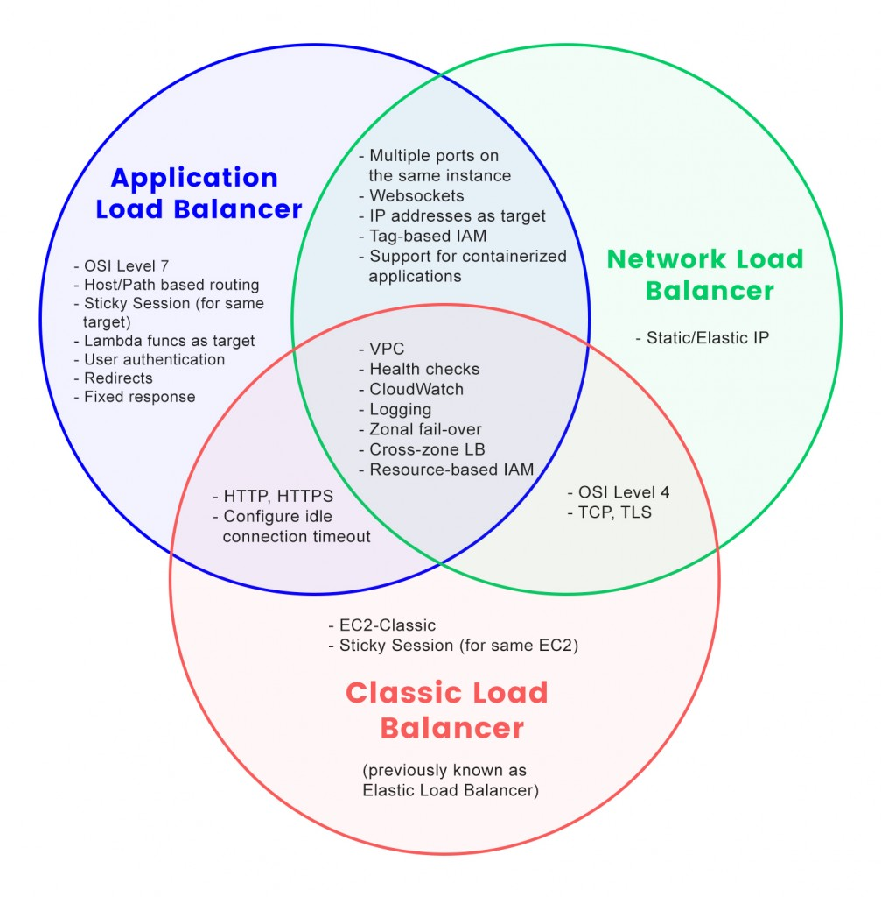

AWS Cloud Practitioner
AWS Well Architected Framework
-
Operational Excellence- Ability to run and monitor systems to deliver buisness value to continually improve supporting procedures.
Eg:- Operations as code, annotating documentation, anticipating failure, revisible changes.
-
Security- Protect information
-
Reliability- Service disruptions, meet the demand, mitigate disruptions.
-
Performance efficiency- Computing resources efficiently to meet system requirements.
-
Cost optimization- Ability to run systems to deliver buisness value at the lowest price.
-
Sustainability- Reduce energy consumption and increase efficiency across all components.
EC2 Types
-
General Purpose : Instances in which compute, storage, memory all are balanced.
-
Compute Optimized : Instances in which compute is high and other are balanced.
Ideal for compute-bound applications that benefit from high-performance processors.
Like general purpose instances, you can use compute optimized instances for workloads such as web, application, and gaming servers.
-
Memory Optimized : Instance in which memory is priority. Designed to deliver
fast performance for workloads that process large datasets in memory. Use in which CPU
preload of application is high.
-
Accelerated Computing : Instances use hardware accelerators, or coprocessors,
to perform some functions more efficiently than is possible in software running on CPUs.
Examples of these functions include floating-point number calculations, graphics processing,
and data pattern matching.
-
Storage optimized : Instances are designed for workloads that require high, sequential read
and write access to large datasets on local storage. Examples of workloads suitable for
storage optimized instances include distributed file systems, data warehousing applications,
and high-frequency online transaction processing (OLTP) systems.
EC2 Pricing
-
On-demand
- Ideal for short term
- Unpredictable usage patterns
- Instances run continously until you stop them, pay as you use
-
Amazon EC2 Savings Plan
- Reduce compute costs by committing consistent compute time for 1 or 3 years term.
- Cost is 72% of on-demand rate.
-
Reserved Instances
- Standard and convertible instance -- 1 to 3 year term
- Scheduled instance -- 1 year
- Billing is on discount of on-demand rate
-
Spot instances
- Flexible start and end.
- Automatic stop instance once work is done.
- 90% off on on-demand rate.
-
Dedicated Hosts
- Physical servers will be provided only for dedicated users use.
Elastic Load Balance
Service that automatically distributes incloming traffic across multiple resorces.
Request -> Elb -> (multiple Ec2's). Types of ELB:

AWS EC2 Auto Scale
Scalability :- Will start with minimum resources and automatically add or remove as per demand.
Ec2 Auto Scal :- Add or remove ec2 as per demand.
1. Dynamic Scale
2. Predictive Scale
How to select a region
A region is a global infrastructure. Inside a region we have multiple Availability zones.
- Compliance with data governance and legal requiremnents.
- Proximity to your customers.
- Pricing
- Available services within a region.
Edge Location
An edge location is a site that Amazon CloudFront uses to store cached copies of your context,
close to your customers for fast delivery.
How to provision AWS services
- AWS management console
- AWS Command line
- AWS SDK's for different programming languages.
AWS Elastic Beanstalk
User need to provide code and configuration, this service will deploy all the necessary
resources like Load Balancer, Auto Scaling, Adjust capacity, etc.
AWS Cloud Formation
Infrastructure as a code.
VPC (Virtual Private Cloud)
- Sets a boundary around AWS resorces so that unwanted requests won't call our resorces. Same as boundary wall around our home.
- Resources are inside Subnet.
Internet Gateway
- Servcie which allows public traffic from internet to your VPC.
- Virtual Private Gateway allow traffic to access private resources.
- Direct Connect Dedicated private connection between data centre and VPC.
Reduce network costs and increases amount of bandwidth.
NACL (Network Access control list)
- Virtual Firewall that controls inbound and outbound traffic at subnet level.
- By default allow all traffic.
- Its a stateless service, means request permission will be checked always(inbound and outbound)
Security Group
- Virtual Firewall the controls inbound and outbound at EC2 level.
- By default inbound is blocked or deny, outbound is allowed.
- Its a Statefull service, means request is checked while its incoming(inbound).
Route 53
A DNS service, connects to AWS service which work on internet. Stores domain names, do health check and directs request to AWS services.
Simple Queue Service(SQS)
Its a messaging service, which follows First-in First-out(FIFO) policy. You can send, store,
and receive messages between software components, without losing messages or requiring other
services to be available. A user or service, recieves it, process it and delete from queue.
Simple Notification Service(SNS)
Its a publish/subscribe model. Using Amazon SNS topics, a publisher publishes messages to subscribers.
In Amazon SNS, subscribers can be web servers, email addresses, AWS Lambda functions, or several other options.
AWS Instance Store
- Block-level storage volumes behaves like physical hard drives.
- Instance is terminated data will be deleted.
- Specific to individual EC2 instance.
Elastic Block Store(EBS)
- Block level storage volume attached to EC2.
- Data won't be loosed when instance is stopped or terminated.
- EBS snapshot is an incremental backup, means whatever is changed will be backed-up at specific intervals.
Elastic File System(EFS)
- Scalable, used with cloud and on-premises.
- Grow, shrinks automatically.
- Large workloads
AWS S3(Simple Storage Service)
Its a object storage, which saves data, key and metadata. Can save upto 5TB of object. Its types are:
-
S3 Standard :- Frequently accessed data. Dat can be store in 3 Availability Zones.
-
S3 Standard IA :- Infrequently accessed data. Storage price decreases, retrieval price increases.
-
S3 Glacier Instant Retrieval :- Works well for archieved data instant access. (Retrieves in milliseconds)
-
S3 Glacier Flexible Retrieval :- Low cost storage for archived data. (Retrieves in mins to hours)
-
S3 Glacier Deep Archive :- Low cost (Retrieves in 12 hours)
AWS S3 Outposts
Delivers object storage to on-premises AWS outposts environment. Retreive, store, access data on AWS outposts.
Different databases in AWS
-
AWS RDS : Used for SQL/PostgreSql related data. Usage of parent-child relationship and joins.
-
AWS Dynamodb : Used when NoSql data storage is priority. Stores data in key-value pair.
-
AWS Document DB : Used when objects or documents need to be stored. MongoDb like usage.
-
AWS Redshift : Used for data warehouse and data analytics.
-
AWS ElasticCache : Caching of data when need faster retrieval. This is created on-top of above DBs.
-
AWS Arora : Amazon Aurora is an enterprise-class relational database. It is compatible with MySQL and PostgreSQL relational databases. It is up to five times faster than standard MySQL databases and up to three times faster than standard PostgreSQL databases.
-
Amazon Quantum Ledger Database (Amazon QLDB) : It is a ledger database service.
-
Amazon Neptune : It is a graph database service.
-
Amazon DynamoDB Accelerator (DAX) : It is an in-memory cache for DynamoDB.
AWS shared responsibility model

AWS Database Migration
Moves data between source and destination.
- Development and test DB migration : Best for developers.
- Database Consolidation : Combine several DB to single DB.
- Continous Replication
Individual Access Management(IAM)
Enables you to manage access to AWS services and resources securely.
-
IAM Root User : When you first create an AWS account, you begin with an identity known as the root
user.Only use the root user when you need to perform a limited number of tasks that are
only available to the root user.
-
IAM User : An IAM user is an identity that you create in AWS.
It represents the person or application that interacts with AWS services and resources.
It consists of a name and credentials.
-
IAM Policy : An IAM policy is a document that allows or denies permissions to AWS services and resources.
-
IAM Groups : An IAM group is a collection of IAM users. When you assign an IAM policy to a group,
all users in the group are granted permissions specified by the policy.
-
IAM Role : An IAM role is an identity that you can assume to gain temporary access to permissions.
-
MFA (Multi-factor Authentication) : Provides an extra layer of security for your AWS account.
AWS Compliance Services
AWS Artifact
It's a service that provide on-demand access to AWS security and compliance reports and select online agreement.
- Artifact agreement : Review, accepts and manage agreements for individual accounts or Organization Units
- Artifact reports : Provide compliance report from third-party auditors. Needs more information about responsibility
for complying with certain regulatory.
AWS Shield
Protects application againg Denial-of-service(DoS) or Distributed-Denial-of-service(DDoS).
DoS means a attacker is sending unwanted request to your application to increase waiting time.
DDos means a attacker is sending multiple request from different ips or using a bot to send multiple requests to your application.
Types:-
- Standard :- no cost, protect from common DoS, DDoS.
- Advanced :- paid, detailed diagnostic
AWS KMS(Key-management System)
Perform encryption operation through the use of cryptographic keys.
AWS WAF(Web Application Firewall)
Monitor network requests that come into your web application. WACL (Web Access Control List)
AWS Inspector
Automated security assessments to improve security and compliance applications.
AWS Guard Duty
Provide intelligent threat detection for your AWS infrastructure and resources.
AWS Cloudwatch
It is web service that enables you to monitor and manage metrics
- Alarms: Automatically perform some action as per values of metrics or threshold value exceeds.
- Dashboards: Enable you to access all the metrics for your resources from a single location.
AWS CloudTrail
Records API calls for your account (logs of user action done by them.)[who when what]
Couldtail Insights Optional feature to detect unusal activity.
AWS Trusted Advisory
Web service that inspects AWS environment and give realtime recommendations in accordance with AWS best practices.
Checks for cost optimization, storage, fault tolerance, security, performance and service limits.
AWS Free Tier components
- Always : Resources are available for all the customers
- 12 months : Resources which are free from the date you sign-up to AWS account
- Trials : Resources which are available from the date you activate a particular service.
AWS Pricing Concepts
- Pay for what you use
- Pay less when you reserve
- Pay less with volume-based discounts when you use more
Pricing Calculator
Lets you explore AWS service and create an estimate for the cost of your use cases on AWS.
AWS Billing and Cost Management Dashboard
- Compare current and previous month bill, estimate next month.
- View Monthly spend by service.
- Free Tier usage by service.
- Access Cost Explorer and create Budgets.
- Purchase and manage savings plans.
- Publish Reports.
Consolidated Billing
- Single bill for multiple accounts in Organization.
- Can see detailed bill of any individual account.
- Discount by combining multiple accounts bill.
AWS Budgets
Create budgets to plan your service usage, costs and instance reservations. Custom alerts on usage limit price.
AWS Cost Explorer
Enables you to visualize, understand and manage your AWS costs and usgae overtime.
Aws Support Plans
-
Basic
- Documnetation and support communities
- AWS Billing questions and service limits.
- Limited Trusted Advisory checks.
- AWS Personal Health Dashboard.
-
Developer
- Client Side Diagnostic
- Best Practice guidance
- Building block architecture, if user don't know any service AWS people will explain.
-
Buisness
- Guidance for AWS offerings.
- All Trusted Advisory Checks.
- Limited support for third party software (for installing, configuring and troubleshooting).
-
Enterprise On-Ramp
- Pool of Technical Account Management
- Consultative review and architecture guidance within 30 mins or less response.
-
Enterprise
- Designated TAM(Technical Account Management)
- 15min or less time for buisness critical issues.
NOTE: As we go with higher Support Plan, its above plans facility will be by-default added.
For example, if user choose Buisness plan then features of Basic and Developer plans will come by-default.
TAM(Technical Account Manager)
A AWS person educates, empowers, evolves, guides in architecture and design solutions.
AWS Marketplace
Digital catalog that includes thousands of software listing from independent vendors.
AWS Migration Strategies
-
Rehosting : Lift and shift, no change and quickly scale.
-
Replatforming : Lift, think, shift, few changes for cloud optimization(not core architecture changes).
-
Refactoring : Reimagining architectureand develop by cloud feature.Use when add feature, scale, performance issue or change is difficult in existing system.
-
Repurchasing : Moving from traditional liscense to a software-as-a-servcie model.
-
Retaining : Keeping applications that are critical.
-
Retiring : Removing applications those are not needed.
AWS Cloud Adoption Framework(CAF)
-
Buisness Perspective : The Business Perspective ensures that IT aligns with business needs and that IT investments link to key business results.
-
People Perspective : The People Perspective supports development of an organization-wide change management strategy for successful cloud adoption.
-
Governance Perspective : The Governance Perspective focuses on the skills and processes to align IT strategy with business strategy. This ensures that you maximize the business value and minimize risks.
-
Platform Perspective : The Platform Perspective includes principles and patterns for implementing new solutions on the cloud, and migrating on-premises workloads to the cloud.
-
Security Perspective : The Security Perspective ensures that the organization meets security objectives for visibility, auditability, control, and agility.
-
Operations Perspective : The Operations Perspective helps you to enable, run, use, operate, and recover IT workloads to the level agreed upon with your business stakeholders.
Snow Family
The AWS Snow Family is a collection of physical devices that help to physically transport up to exabytes of data into and out of AWS.
-
Snowcone : It is a small, rugged, and secure edge computing and data transfer device.
It features 2 CPUs, 4 GB of memory, and 8 TB of usable storage.
-
Snowball Edge Storage Optimized : 80TB hard disk , compute 40 vCPUs, and 80 GiB of memory.
-
Snowball Edge Compute Optimized : 42TB hard disk, compute 52 vCPUs, 208 GiB of memory.
-
Snowmobile : It is an exabyte-scale data transfer service used to move large amounts of data to AWS.
You can transfer up to 100 petabytes of data.
Benifits of Cloud
- Trade upfront expense for variable expense.
- Benifit from massive economies of scale (Pay as you go, Pricing)
- Stop guessing capacity(on-demand scale)
- Increase speed and agility(Flexiblity)
- Stop spending money running and maintaining data centers.(Spend less on infrastructure and more on application building.)
- Go global in minutes (Deploy in different regions easily)